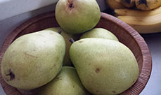
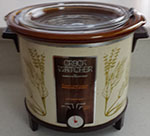

Cooking is a very good skill to acquire. If You can cook, you can eat well and hopefully not have to spend much money on your food. You can usually cook meals that are much healthier than what is found in restaurants -- especially better than what is found in fast food restaurants.
Cooking can also be a lot of fun, and the process of cooking can be a fun social event that is shared with others, and of course the meals themselves are fun to share with others.
Crock Pot To cook, you need a kitchen, or at least some place to store food and utensils, and you need something to cook on or in. A refrigerator, even a small one, is highly recommended, as you will need a place to store both your raw ingredients and your cooked food. If you are just starting out, the least resource intensive device to cook with is a crock pot. A crock pot. only takes about a foot of counter space and can be used to create a wide variety of meals.
Top of Page